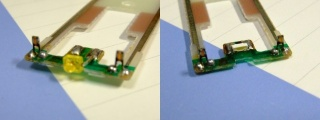
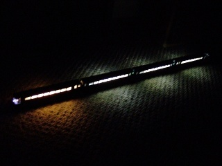
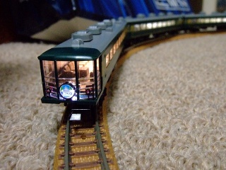

「サロンカーなにわ」テールマーク白色LED化
本稿では，TOMIXの14系700番台「サロンカーなにわ」の小加工について扱います． 詳しくはわかりませんが，TOMIXの初期の製品ではないかと思います． 車両の塗装も旧塗装（金帯塗装）であり，現行製品とは異なるようです． 友人から譲っていただいた中古車両なのですが，破損個所や欠品があり，良好な状態とは言えませんでした．
今回は，走行可能な状態への復元作業に加え，テールマークのLEDを白色LEDに換装しました．
LEDの換装
いきなりですが，LED換装前後の比較写真です． 換装前（写真左）は，テールマーク部に何故か緑色のLEDが採用されていました． 発売当時は白色LEDなんてありませんでしたから無理もないでしょう． それにしても，黄色や橙色でも良かったのではないでしょうか…．
換装後は，テールマークが白色光に照らされていることがわかると思います． 使用した白色LEDは超高輝度のため，光の漏れ具合が気になりますが， 改造前と比較して自然に近い色合いになったと感じています…． 遮光対策は，後々講じることにします．

使用したLEDは日亜化学の超高輝度サイドビューチップLEDで，型番はNASW008BT． 秋月電子で6個入300円で購入できます． このチップLEDは，チップ上部ではなく側面が発光することが特徴です．
| 番号 | 部品名 | 型番 | 数量 | 参考価格 |
|---|---|---|---|---|
| LED1 | サイドビューチップLED | 日亜化学 NASW008BT（Size: 1224） | 2 | 50円 |
チップLEDは大変小さい電子部品です． 紛失のほか，半田付けの際には焼損に注意しながら手早く作業をしなければいけません．
車両床下と台車を固定するネジを外し，LEDが実装された基板を取り外します． 今回はLEDのみを換装しました．抵抗などの他の電子部品には手を加えていません．
LED換装前後の基板を比較した写真です． 元々実装されている緑色LEDは，先端部分は砲弾型でリード線の根元は平たい特殊形状のLEDでした． 緑色LEDを取り外し，ランドを掃除してから同じ場所にチップLEDを半田付けするだけで大丈夫です．
{kind=link}
完成
今回は，テールマークのLED換装に加え，市販の室内灯組み込みも同時に行いました． 作業完了後の写真です．4両のうち3両は白色LEDの室内灯，全室サロンカーの1号車のみ電球色としました．
 {kind=link}
{kind=link}
車輪や台車の整備に加え，テールマークのLED換装や室内灯組み込み行い線路上への復活を果たしました． しかし，ダミーカプラやテールライト部分の導光材（細棒）が欠品しています． 今後はこれらを補完し，より整った姿にしていきたいです．